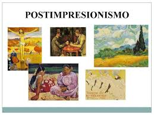

Historia de la obra
Noche estrellada sobre el Ródano (septiembre de 1888; en francés: Nuit étoilée sur le Rhône) es una de las pinturas de Vincent van Gogh de la ciudad de Arlés por la noche. Fue pintado en un lugar en la orilla del Ródano que estaba a solo dos minutos andando de la Casa Amarilla en la plaza Lamartine, que Van Gogh alquilaba en ese tiempo. El cielo nocturno y los efectos de luz en la noche proporcionaron el tema para algunas de sus pinturas más famosas, incluyendo Terraza de café por la noche (pintada a principios del mismo mes) y la tela posterior en Saint-Rémy-de-Provence, La noche estrellada. Un boceto de la pintura fue incluido en una carta de van Gogh enviada a su amigo Eugène Boch el 2 de octubre de 1888.

Biografía del autor
Vincent Willem van Gogh(30 de marzo de 1853-29 de julio de 1890) fue un pintor neerlandés, uno de los principales exponentes del postimpresionismo.Pintó unos 800 cuadros y realizó más de 1600 dibujos. Una figura central en su vida fue su hermano menor Theo, marchante de arte en París, quien le prestó apoyo financiero de manera continua y desinteresada.

Movimiento Artístico o Vanguardia
También llamado "Neo impresionismo" o "Post impresionismo" es un movimiento artístico que nace en Francia a finales del siglo XVIII, es representado como continuación y contraposición al Impresionismo, toma elementos de este, pero a la vez rechaza de las limitaciones que supone. Se caracteriza por un enfoque subjetivo de la pintura, ya que los artistas buscaban evocar emociones a través de su obra, dejando a un lado el realismo.
